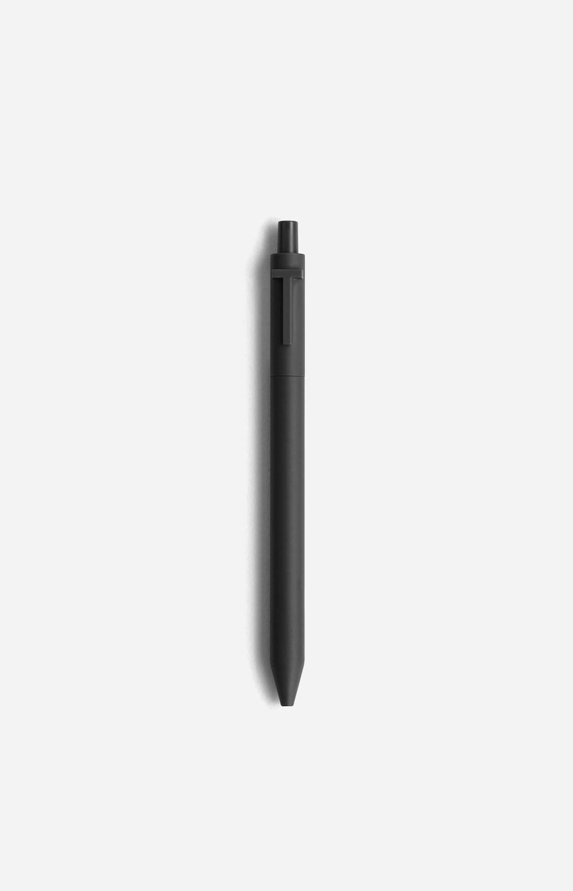

ScritturaPenne e matite
Una penna per gli appunti, una matita per le idee ancora da cambiare.
Cosa annotare
Indica se cerchi penne a sfera, gel, matite o ricariche. Colore e tipo di punta aiutano a trovare la soluzione giusta.
Una penna, un foglio, un nuovo quaderno. Scegli da dove partire e prepara la tua prossima visita.

Categorie da esplorare. Articoli, varianti e disponibilità si verificano in negozio.
6 categorie da esplorare

ScritturaUna penna per gli appunti, una matita per le idee ancora da cambiare.
Indica se cerchi penne a sfera, gel, matite o ricariche. Colore e tipo di punta aiutano a trovare la soluzione giusta.
 Carta e quaderni
Carta e quaderniPagine per una nuova materia, un progetto o un pensiero al volo.
A righe, a quadretti o bianchi? Annota formato e tipo di pagina prima di passare in negozio.
Disegno e colorePer disegnare, sottolineare e dare forma a quello che immagini.
Specifica la tecnica che ti interessa: matite colorate, pennarelli o altri materiali per il disegno. Chiedi al banco quali opzioni sono disponibili.
Il punto di partenza di un biglietto, un collage o un piccolo progetto.
Porta con te le misure, il colore e una breve descrizione del progetto. Formati e materiali vanno verificati in negozio.
 Organizzazione
OrganizzazioneUna pagina per ricordare. Uno spazio per organizzare la giornata.
Cerchi un calendario, un taccuino o un supporto per gli appunti? Scrivi la tua preferenza e verifica le alternative al banco.
 Organizzazione
OrganizzazioneGomme, temperini e accessori da tenere a portata di mano.
Metti in lista i piccoli articoli che mancano sulla scrivania o nell’astuccio. Quantità e caratteristiche si possono annotare nella tua lista.
Prova un’altra ricerca oppure aggiungila liberamente alla tua lista.
Scrivi tu cosa cerchiLa lista può contenere anche un articolo preciso, una misura o un’esigenza particolare. Annotala: ne parliamo al banco.
Aggiungi una voce libera